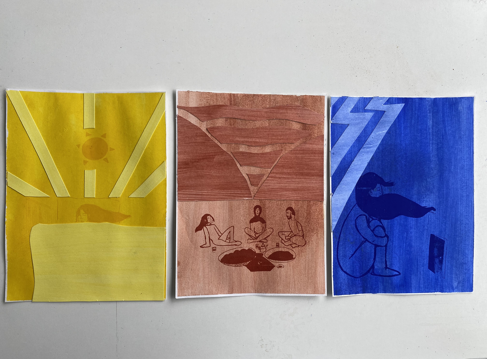

La consigne était de retranscrire ces vacances et utiliser comme médium de l'encre végétale.
Dans un premier temps, j'ai réalisé mes illustrations qui représente le début, le milieu et la fin de mes vacances


Viens l'étape de la préparation des médiums.
Encre bleue: pigment bleu outremer
Encre jaune: curcuma
Encre rouge: Betterave
Le papier est recyclé.
Après l'impression en scérigraphie voici le résultat final
